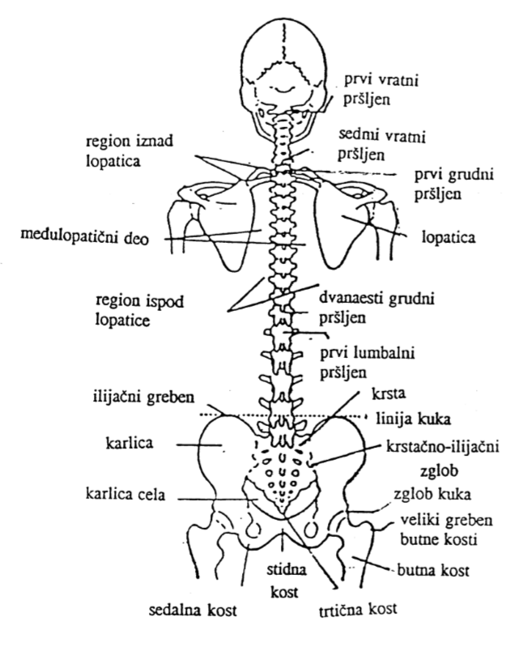

Divine Massage Therapy
Divine Massage Therapy

Spine Exercises
Your spine is one of the most important parts of your body. It gives your body structure and support. Without it you could not stand up or keep yourself upright. As long as you don’t have problems with back pain you really may not be so aware of its importance, but if you do experience difficulty and pain with your back then suddenly you become aware of just how important the spine is. Back pain, as ordinary as it may sound, can really cause some serious problems which can prevent you from leading a normal life.
Fortunately, there are powerful physical therapies and exercises which are specifically designed for keeping the spine in optimal shape and to relieve pain.
Lumbar Spine Exercises
Statistics say that about 20% of the population has never had back pain. However, the remaining 80% of the world population has or has had some kind of back problems which interrupt their normal everyday life. Many of these people have developed such serious problems that they end up seeking medical advice and help.
Once we feel the pain, we usually make a vow that we’ll do whatever it takes to keep it from happening again. We say that we’ll stick to the regular exercises or avoid those situations which are harmful, but what usually ends happening? Life gets in the way and we forget – always putting it behind us until it flares up again.
People usually practice just until the time the pain fades away. Some continue a little longer and then return to their old bad habits that caused the problems; behaviors such as prolonged sitting in front of the computer without moving or a daily schedule without much physical activity. As a result the pain comes back and the cycle starts all over again.
To really break free from this cycle takes a strong commitment and some self- discipline but with the right set of exercises, it can be easier than might be expected.
Lumbar - Sacral Spine Exercises
There are many great exercises for the back with the goal of increasing mobility of the spine, strengthening the back and abdominal muscles, and stabilizing the spinal column. Strengthening the back muscles is essential because these muscles hold our spine.
These exercises can be done in order to prevent pain in the lumbar-sacral spine, but also to maintain good health and working ability. Back pain can make any type of work difficult or even impossible in some cases. Even some of the simplest activities can become problematic.
Every person is unique, so in figuring what exercises will work best for you, it is recommended that you consult with a physiotherapist or other health professional.
Spine Exercises - Practicing
An exercise program which is designed to help strengthen of pelvitrohanteric muscles is absolutely essential for anyone. Such exercises must be done properly and paced out over time with a pause between each exercise every one minute.
After pain is reduced or eliminated, the beginning of kinesis therapy procedures is necessary and from that point, a complete recovery depends on how much work the patient is ready to commit to.
Exercise can help us to get rid of the pain, but it is also essential to keep practicing regularly.
How To Treat A Herniated Disc?
According to some studies, approximately 80% of the world's population suffers from a herniated disc or some kind of damage to the intervertebral discs in the spine, which can be caused by degenerative changes or injuries.
Due to the contemporary life style and habits that we have, disc herniation is more common in young adults. In order to cure a herniated disk it is necessary to avoid the strains and movements that worsen the condition and treatment can take a long time. The most common method of treatment is a physical therapy that focuses specifically on the painful area, thus improving the function of the spine.
When therapy is first applied, improvements may be noticed in short time, leading to a significant reduction of pain and increase of mobility. Once the complete therapy is finished, the patient may feel that the pain is completely gone and regain full mobility. At such point, the patient can return to his normal life and managing of their everyday work and activities.
Scoliosis
Scoliosis, literally means - curved spine. It can be distorted in the upper part, the lumbar area, or even a double curved. In medical terms, scoliosis is a three-dimensional deformity of the spine, and is a lateral curvature of the spine, which may be accompanied by vertebral rotation and thus the deformation of the thorax. Consequently, the pelvis can be bad-centered, as well as the shoulders.
For this reason, an imbalance that occurs can affect the entire body and all movements from standing, sitting or lying down. Scoliosis may be structural or functional. In the former, the spine bends to one side, and the vertebrae rotate pulling the ribs. As a result of this, a hump appears gibbously. A double curve is referred to as ‘S scoliosis.’
Treatment Of Scoliosis
Scoliosis is a medical condition in which a person's spine has a sideways curve, and is also an extremely widespread disease of the spine. It is a progressive disease, in which the curvature of the spine can become larger over time unless treatment is applied.
Scoliosis usually occurs during the growth of children between 10 and 17 years of age, and after completion of growth, scoliosis is sometimes partially stabilized. Due to a rapid growth, some back muscles remain short on one side, while on the other side they are extended, causing the spine to bend and cause the entire backbone to curve in the form of the letter S.
If you are reading this text, sitting at your computer, ask yourself how much you actually sit down during the day? Scoliosis can occur simply by excessive sitting, because while we sit, pressure on the spine from the pelvis is two-and-a-half times greater than when standing, which would mean that if you sit all day, your spine is almost three times more strained than when standing or walking. It is important to stop the progression of the deformity and to maintain the achieved correction. There are conservative and surgical treatments, which are usually taken as a last resort.
Kyphosis
In short, kyphosis is gibbousness. This is actually an increase in the normal curvature of the spine, and usually found in the thoracic part of spine. Kyphosis is usually caused by bad habits such as irregular and prolonged sitting which can lead to pain in the neck and shoulder-blade and cause the inability of long-term holding of the upright position of the body.
How does a person who suffers from kyphosis look? The head is bent forward, shoulders are bent, wings blades are lifted, back is humped, the stomach is weak and flabby, and lumbar part is too curved.
Lordosis
The term lordosis means inward curving of a part of the lumbar and cervical vertebral column. Lordotic posture is a disorder signified by an increase of the spine curve in the frontal direction. Lordosis and kyphosis are often associated.
Spine Exercises
Now that we are familiar with the most common problems of the spinal column, let’s discuss how we can help solve them. Kinesis is a method of treatment which uses movement as a tool for overcoming pain, while simultaneously employing exercises to correct the problem.
The point of Kinesis is to use specific exercises that correct deformities and poor posture as well as prevent the occurrence of such problems. There are deformities such as protruding or sunken chest, straight back, O or X legs, as well as flat feet. However, the most common problems are deformities of the spine.
By the application of corrective exercises during the treatment, long-lasting results are achieved. Back pain disappears, postural asymmetry is corrected, the angle of curvature is reduced, and in some cases it is even possible to achieve such positive results with elderly persons.
These corrective exercises create a balance between opposing muscle groups, and the both sides of the body, helping you achieve continuous improvement regarding proper posture and overall awareness of your body.
Corrective Exercises - Practicing
The physical therapist will pay particular attention to the alignment and stabilization of the body, while the use of auxiliary equipment such as a ball or balancers, can contribute to even better results for improving posture.
Strengthening of weakened muscles of the trunk leads to greater stability of the spine, and stretching of shortened muscles improves body alignment.
Treatment Of Herniated Disc
We've all heard of the herniated disc. This disease of the spine usually occurs between thirty and fifty years of age, and the reason for this is that the natural aging process begins at an early age. It is not unusual to find people, even as young as twenty years old, who also have problems with a herniated disc.
Herniated Disc In Lumbal Part Of The Spine
The most common symptoms of the disease are pain in the lower back, numbness, or pain that runs down the leg up to the little finger of the foot, pain in the knee or around it. It also can be associated with failure to control the urination, failure to control the feet, sexual dysfunction, burning feet or feelings of cold feet.
Another symptom is pain which occurs while moving the torso, such as stretching, bending, or rotating. There can be also pain in the calves, causing the overall posture to be distorted.
Symptoms Of Herniated Disc In The Neck
Symptoms vary depending on which part of the spine has the problem, whether it is in the lumbar or cervical part of the spine. In regards to the problems in the cervical part, there may be pain in the arms and shoulders, painful and restricted movements of the neck, numbness of the hands and fingers, ringing in the ears, headaches and migraines, pain between the shoulder blades, fatigue, dizziness and nausea, and if contact with the spinal cord occurs, there can even be pain throughout the whole body.
How To Treat Disc Herniation?
One common treatment for a herniated disc employs the use of analgesics; drugs for reducing pain and inflammation, relative resting, and cooling in the loin area (not heating, as this may cause even more inflammation and stronger nerve pain).
Treatment Of Disc Herniation - Practicing
Discus hernia occurs due to excessive strains and insufficient relief of the spine. Nourishment of the discs works on the principle of sponges, because they have no blood vessels. When the body is in the upright position, it increases the pressure on them; pressing out harmful substances, while during the resting or sitting with the backrest at an angle of 45 degrees, the pressure decreases and nutrients enter the discs.
The pace of modern life is such that most people sit or stand too much, so the spine is overloaded, and without relief it can lead to faster deterioration of discs due to their poor nourishment. Poor posture, obesity and smoking, also negatively affect the spine, and with a lack of physical activity the muscles become weak, which are important because they hold the spine.
If the condition is serious and symptoms become overwhelming and common treatments do not give the desired results, then an operation may be considered. There is also an urgent surgical treatment, when the patient has weakness in the legs, lack of urination and defecation, or inability to retain them. Symptoms include muscle weakness, or inability to walk on the toes or on the heel of one foot.
Surgery always carries some risk, so it is necessary to do everything possible to avoid it, which means taking care of the spine daily through regular exercise and physical activity. The good news is that most people adopt this rule, so disk herniation surgery can be avoided.
Treatment Of Spondylosis
Aging is the predominant cause of spondylosis, also known as spinal arthritis.
If you’ve ever heard and elderly person complain about neck problems, it is very possible that this is spondylosis. Cervical spine spondylosis is a disorder usually associated with aging, primarily affecting joints in the neck.
How Does Spondylosis Develop?
Spondylosis usually develops as a result of wear and tear of cartilage and bone in the neck area of the spine. As mentioned before, it mostly affects older persons, but it can also be caused by other factors.
What Are Some Other Terms For Spondylosis?
Spondylosis may also be referred to as a disorder of the cervical spine, ossification of the neck, ossification of the cervical spine, cervical osteoarthritis, or cervical spondylosis.
What Are The Causes Of Spondylosis?
The causes of spondylosis are degenerative changes in the vertebrae and disks, which are exacerbated by aging, changes such as dehydration of discs, disc herniation, the development of bone spurs (growths), and stiffness of the ligaments.
Another cause is when discs between the vertebrae become dry and begin to shrink, usually at the time when a person enters the fortieth year of age, thus reducing the effect of the disks as "cushions" between the bones in the neck. As we age, the discs may also develop cracks. In this way, the disc can distort or hernia occurs thus displacing the disc from its intervertebral space.
Bone growths create extra pressure on the spinal cord and nerves, causing you to feel pain in the joints. You also may have pain or difficulty when trying to move the neck or moving the neck.
What Are The Symptoms Of Spondylosis?
Symptoms of spondylosis may occur suddenly or develop gradually and develop in intensity which can range from mild to serious.
The first and primary symptoms are pain and stiffness of the neck. Pain behind the shoulder can also be common. People with spondylosis also complain of pain along the hands and fingers, as well as pain which increases during sitting, standing, sneezing, coughing or when a person moves their neck back. Addiotional symptoms include headaches in the occipital part of the head, and tingling or numbness, which can be felt in the arms and shoulders, but which may also occur in the legs.
How To Treat Spondylosis?
The first goal of any type of treatment for spondylosis is to alleviate the pain, then to reduce the risk of permanent damage to the extent that it allows the person to lead a normal life.
If you have been diagnosed with spondylosis, you will first be referred to physical therapy. It will make your neck and shoulder muscles stronger, and at the same time it will help them to stretch better. The physical therapist can also apply treatments which aim to improve the traction of the neck, usually performed with the use of weights to increase the space between the neck joints, and to relieve pressure on the discs and nerves of the cervical spine. As a result, you will feel the reduction or disappearance of pain.
Also, spondylosis conditions may be treated by using medications, such as painkillers, non-steroidal anti-inflammatory drugs, muscle relaxants which treat muscle spasms, corticosteroids, in the form of steroid injections for pain, and epilepsy medications to relieve pain caused by nerve damage, as well as anti-depressants.
The good news is that such treatments described above quite often give the desired results and there is no need for surgical treatment. However, in some rarer cases, surgical procedures may be deemed necessary.
This usually occurs in situations where the patient's condition is serious, and when he did not react to previous treatment measures. Surgery may involve removing part of the vertebrae, discs or bony growths, in order to create more space for the spinal cord and nerve.
If by reading this, you’ve recognized some of the symptoms in yourself, it is a good idea to consult with a therapist in order to make necessary check-ups, and if there is a diagnosis of spondylosis so that treatment can promptly be applied.
What is Scoliosis?
Having scoliosis means to have a curved spine. It can be present in a couple of ways, such as when the spine is twisted to the left or to the right, C-shaped, or in a double curve shape like the letter S.
Very often it is seen in kids, at an early age, but it can also be found during adolescence, when the child suddenly experiences a massive growth spurt. It can affect children during puberty, but also after completion of growth. Of course, the scoliosis is present at adults, also.
Is Scoliosis Hereditary?
Maybe your child has scoliosis and now you're wondering whether you might be responsible for it. Doctors say, based on experience and research, that if one of the parents or both, have had some deformity of the spine, it is likely that the child will also have such a problem.
If you already know there is a genetic predisposition for such a problem, then it would be wise to follow the growth of the spine of your child, starting from an early age. In this way, if you ever notice any unusual changes, you can respond in a timely manner.
What Are The Causes Of Scoliosis?
The cause of scoliosis in many cases may be attributed to an incorrect sitting posture or bad posture in general. However, in some cases, its causes may be unknown and its progression can be unpredictable, which makes treatment quite difficult. If there is any problem in the joints and muscles at birth and during the first year of life, and it was not timely and completely rehabilitated as a result, deformity of the spine can occur.
How To Diagnose Scoliosis?
In order to determine whether or not a child has scoliosis, a physician will exam a child without clothes, with his back turned. He will look at shoulder height to see if it one shoulder is lower than the other, which would therefore indicate the blade on that side is also lower. In relation to the other blade it may appear a bit separated.
A doctor will also exam the vertebrae with the hands to feel if they are not in a straight line. There may be also an asymmetry of triangles stature. This is an empty space between the arms and waist, which should be in the form of a triangle, and if there is no deformation, they are symmetrical.
The physician will also take a look at the symmetry of ribs’ arcs while the child is bent forward, as if moving to touch the feet. If there are bumps in the level of the ribs, especially if it is one-sided, it is a good indication of the presence of scoliosis.
How To Treat Scoliosis?
Scoliosis may be present in all seasons of life, but in the case of children, who are still in the growth phase, it can often be fully corrected. Children will be evaluated by a doctor based on clinical features, such as the age of the child as well as the progression of the deformity to determine the proper method of treatment.
For the treatment of scoliosis, regardless of age, there are targeted corrective exercises which must be done correctly in order to take effect. Therefore they should be done under the supervision of a physiotherapist. These exercises can be done daily, but occasionally complete therapy is needed for fixing the backbone, pelvis and hip.
Backstroke swimming may also be helpful, but it is to be done under professional supervision. The next option in the treatment of scoliosis is wearing an orthopedic corset. When the spine is curved, it is not easy to correct it, so the child, together with a program of exercises, may also wear a prosthetic leg.
Scoliosis requires an individual approach to each patient, especially when it comes to children. For successful remediation of the spine, it is necessary that parents and therapist act together as a team.
In some of the most severe cases, when the corrective exercises, swimming, wearing an orthopedic corset, do not give the intended results, or when the curvature of the spine is too large, surgery may be advised as a solution.
Treatment Of Scoliosis By Schroth Method
The Schroth method is an alternative method of treatment for scoliosis which is often successful. It is a physiotherapy treatment which employs the use of isometric exercises (muscle contractions without movement), and exercises for strengthening and stretching the asymmetric muscles.
For each patient undergoing the Schroth method, an exercise program is specifically tailored to each individual patient. The Schroth method is conducted by first making postural corrections to correct the body in free space, and then to activate the muscles. Exercises are done in front of the mirror, while employing the use of rotational breathing. This type of treatment, along with other elements of other forms of treatment can lead to a successful correction of the problem.
